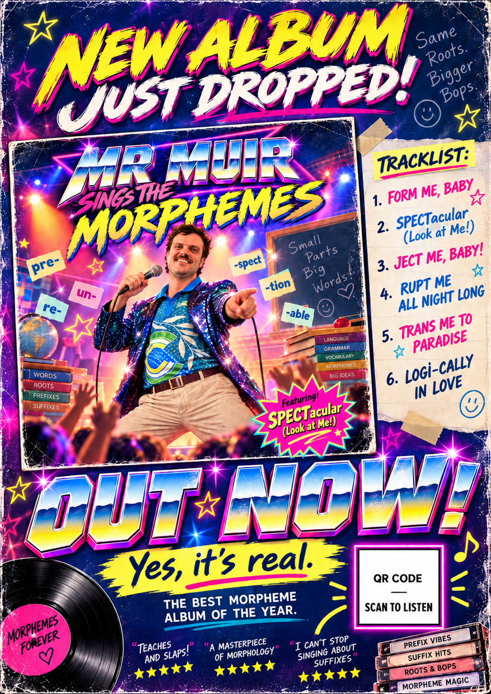

New album • Out nowMR MUIR
MR MUIR
SINGS THE
MORPHEMES
Six incredible songs. One extraordinary moustache. Absolutely no reason for any of this.
6 TRACKSMORPHOLOGY POP100% REAL*
*The album is real. The talent is a matter of opinion.
The complete collection
Mr Muir • Volume 1THE TRACKLIST
Select a track to listen. Songs will play when the audio files are added.
Behind the music
MEET THE LEGEND
Same roots. Bigger bops.
Some artists sing about love. Some sing about heartbreak. Mr Muir sings about Latin word parts in a shorts.
From FORM ME, BABY to LOGI-CALLY IN LOVE, this album takes the word origins you never asked to hear sung and makes sure you'll never forget them.
Six tracks. One teacher. Infinite second-hand embarrassment.
Have you seen the poster?
The official release campaign. Yes, really.
